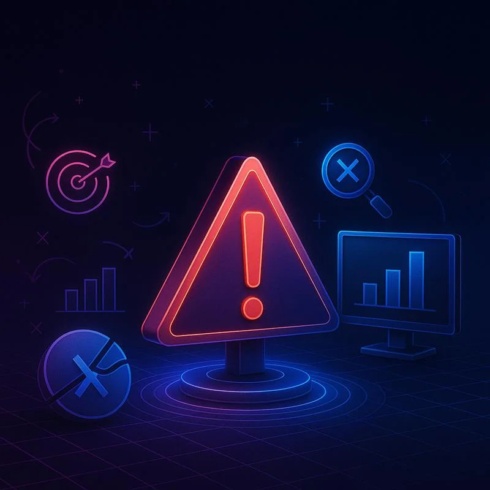

Seguimiento de leads: cómo convertir consultas en oportunidades
Muchas pymes invierten tiempo en atraer consultas por formularios, WhatsApp, redes sociales o recomendaciones. El problema aparece después: el mensaje queda en una bandeja, nadie sabe quién responde o el próximo contacto depende de que alguien se acuerde.
Dar seguimiento no significa insistir sin contexto. Significa entender qué necesita cada persona, responder de manera oportuna y dejar claro cuál es el siguiente paso de la conversación.
Un proceso simple conecta cada consulta con un responsable, un registro y una acción concreta. Así, el equipo deja de improvisar y aprende qué ocurre entre el primer contacto y la decisión de compra.
En TrendMakers ayudamos a diseñar sistemas de marketing y ventas que conectan captación, CRM, automatización y seguimiento comercial.

Un proceso de seguimiento empieza antes del primer recordatorio
El seguimiento funciona cuando forma parte del recorrido comercial completo: desde dónde llegó la consulta hasta qué respuesta recibió y qué debería ocurrir después.
Para una pyme, el sistema no tiene que ser complejo. Tiene que ser visible, fácil de actualizar y útil para decidir quién hace qué, cuándo y con qué contexto.
1. Centralizá cada consulta desde el primer contacto
Registrá cada lead en un lugar compartido, junto con la fuente, la fecha, el interés principal, el canal de contacto y la información necesaria para responder.
Un registro común reduce consultas duplicadas y evita que los datos queden repartidos entre planillas, mensajes y correos. También permite retomar la conversación sin pedirle al cliente que repita todo.
- Fuente de la consulta
- Necesidad o servicio de interés
- Responsable asignado
- Última interacción y resultado
- Próxima acción y fecha
2. Asigná un responsable y definí el próximo paso
Cada oportunidad necesita una persona a cargo y una acción concreta. Puede ser responder una consulta, enviar una propuesta, coordinar una llamada o volver a contactar en una fecha acordada.
Definir ese próximo paso evita que los leads queden en etapas ambiguas. El equipo puede ver qué está pendiente y priorizar según la necesidad del cliente, sin depender de la memoria individual.
3. Respondé con contexto y aportá valor
Un buen seguimiento retoma lo que la persona preguntó y facilita una decisión. En lugar de mandar el mismo mensaje a todos, usá el contexto disponible para contestar la duda, compartir información útil o proponer una conversación relevante.
Si todavía no hay una respuesta, se puede confirmar la recepción y explicar cuándo volverá a haber novedades. La claridad cuida la experiencia y mantiene abierta la conversación.
4. Automatizá recordatorios, no relaciones
La automatización puede crear tareas, avisar cuando vence un seguimiento y ordenar mensajes según la etapa del lead. También puede alertar si una consulta no tiene responsable o si una oportunidad lleva demasiado tiempo sin actividad.
Las conversaciones y decisiones importantes deben conservar criterio humano. Automatizar sirve para que el equipo no olvide el próximo paso y pueda dedicar más atención a cada cliente.
5. Medí dónde se frena la conversación
Elegí indicadores que ayuden a mejorar el proceso: tiempo hasta la primera respuesta, consultas con responsable asignado, seguimientos realizados y avance entre etapas.
Revisá de dónde llegan las oportunidades y qué motivos aparecen cuando no avanzan. Esa información permite ajustar mensajes, procesos y canales sin inventar resultados ni perseguir métricas aisladas.
Conclusión: hacé que cada lead tenga un próximo paso
Un seguimiento comercial útil une personas, información y próximos pasos. No hace falta sumar más mensajes: hace falta que cada consulta tenga contexto, alguien que la acompañe y una acción clara.
Con un proceso sencillo, el equipo puede responder con mayor consistencia, detectar qué oportunidades necesitan atención y reconocer dónde se pierden conversaciones.
Centralizá los datos, definí responsabilidades, automatizá recordatorios y revisá el recorrido con regularidad. La tecnología ayuda cuando hace más fácil sostener una relación relevante.
En TrendMakers conectamos marketing, CRM y automatización para que cada lead reciba un seguimiento claro, oportuno y alineado con los objetivos del negocio.
Convertí el seguimiento de leads en un proceso claro y útil.
Conectamos marketing, CRM y automatización para que el seguimiento sea oportuno y relevante.
De las ideas a la práctica
Explorá servicios y proyectos relacionados.
- Servicio

Marketing digital y automatización para empresas
Conectamos estrategia, campañas, contenidos, CRM y automatización para atraer clientes, dar seguimiento a leads y mejorar la conversión.
Conocé el servicio - Caso de éxito

ProntoLED: automatización de marketing en acción
Conocé cómo la segmentación y la automatización de emails ayudaron a reactivar clientes y acompañar la recompra.
Explorá el proyecto
Conocé nuestro blog
Compartimos ideas prácticas para ayudar a los negocios a crecer con marketing, datos y tecnología.
Ver todos los artículos
Marketing Automation & Growth sin perder leads
Conectá funnels, CRM, automatización y datos para dar seguimiento a cada lead.
Leer artículo ↗
Marketing estratégico para crecer con sistema
Conectá contenidos, paid media, ventas y datos en un sistema medible.
Leer artículo ↗Email marketing y nurturing
Conectá automatización y CRM para acompañar a cada lead.
Leer artículo ↗